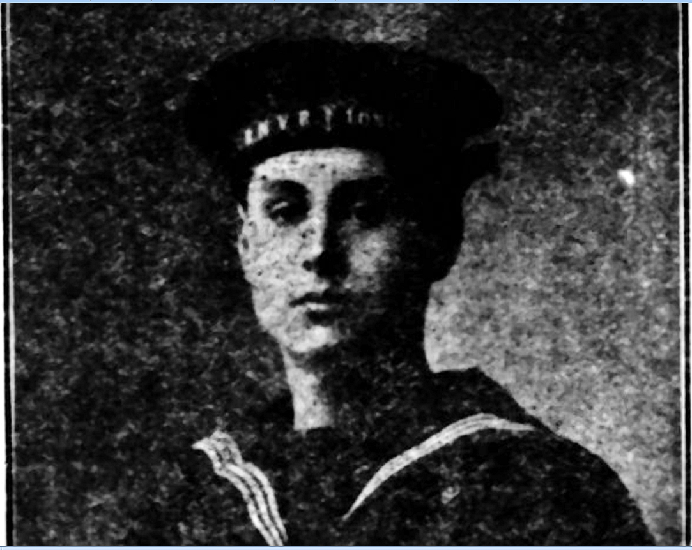

William Robert Williamson


William Robert Williamson was a Northwood Lyonian and railway clerk who joined the Royal Naval Division shortly before the outbreak of the First World War. He served at Antwerp and in the Dardanelles campaign before being killed in action at Cape Helles in May 1915.
Civilian Life - William Robert Williamson was born in Northwood in 1896 and was the only son of William and Agnes Williamson of Hallowell Road, Northwood. He was educated first at Northwood Church School, then at the Lower School of John Lyon, and finally under Mr E. A. Cave at Harrow. After completing his education, he joined the staff of the London and North Western Railway, where he worked as a railway clerk.
Military Life - Before the outbreak of war, Williamson joined the Naval Division in April 1914 and, when war was declared, was called up for service with the Royal Naval Volunteer Reserve. He trained at Lambeth and Deal before being sent with the Naval Division. This unique division was formed by the Royal Navy from surplus naval reservists to fight on land alongside the British Army. In the first months of the war, the Belgian Army held out in Antwerp to disrupt the German Army's logistics and communication to the front in France. Williamson deployed to Antwerp when British troops including units from the Naval Division were sent to assist. He was among units that safely evacuated before Antwerp fell. (Others escaped to neutral Netherlands and remained interned until the end of the war.)
Further training followed at the Crystal Palace and in Berwickshire, after which he sailed for Egypt in March 1915, spending several weeks at Port Said and Alexandria before being sent to the Dardanelles. The Drake Battalion of the Naval Division landed at Gallipoli in late April 1915 and was quickly thrust into brutal, close-quarters trench warfare against defending Ottoman forces. Throughout May 1915, the battalion was holding highly volatile, primitive trench lines at Helles, facing constant artillery bombardments, sniper fire, and localized counter-attacks. Able Seaman Williamson was killed during these daily, attrition-heavy trench combat operations at Cape Helles on 25 May 1915, aged 19. A later newspaper report stated that an officer had written that his body was found with a bullet wound through the heart and that death must have been instantaneous. He was buried by moonlight with three other men.
As his grave was subsequently lost, Williamson is commemorated on the Helles Memorial in Turkey. His name was also recorded on the John Lyon School memorials and the Northwood War Memorial.